-

The
Noah Dorfman
Project
Versacopter Version 2.0: Custom Rendition Design Customized and Constructed By Noah
An organized workstation makes a productive workstation.
Power Distribution Board (PDB) Assembly
Frame Assembly
Carbon Fiber Boom Insertion
Brushless Motor Installation
Naze 32 Rev 6 Flight Controller with Connected Leads
Electronics Plugged in Together in an "Open-Faced" Style
First Clean Flight Google Application Boot and Quadcopter Software Configuration
Transmitter Binding, Sealing the Body, and Installing the Propellors
Finding a Fun and Safe Place to Fly
It Can Fly
Practice Makes Perfect
Video of My Versacopter V2 Maiden Flight
Crashing is Part of the Experience
 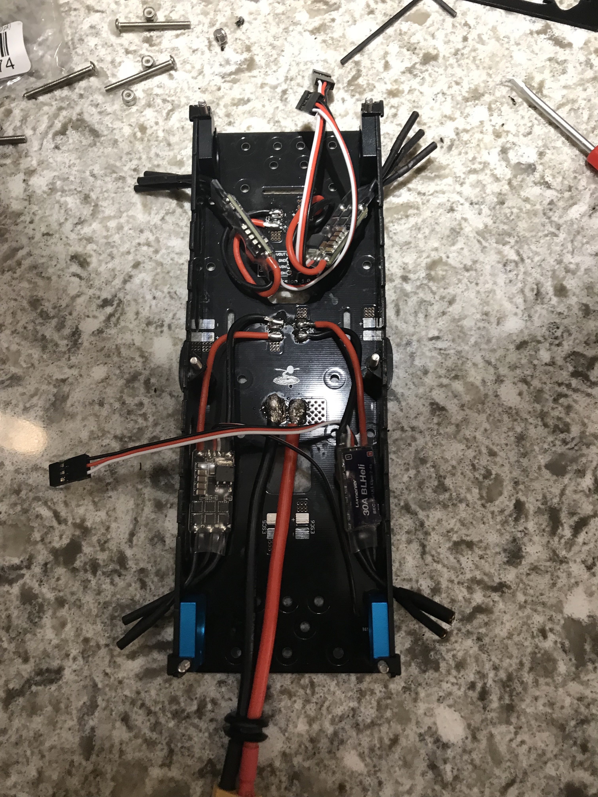
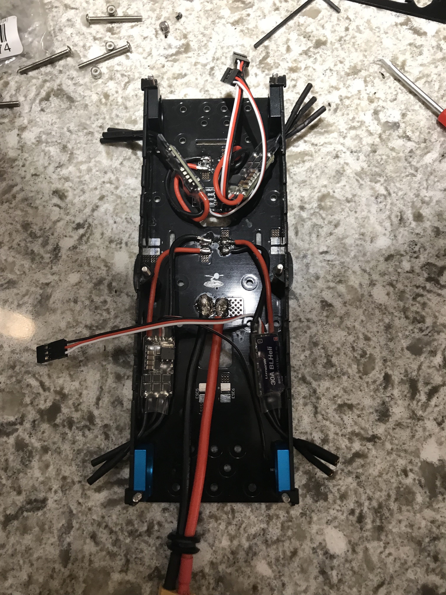
 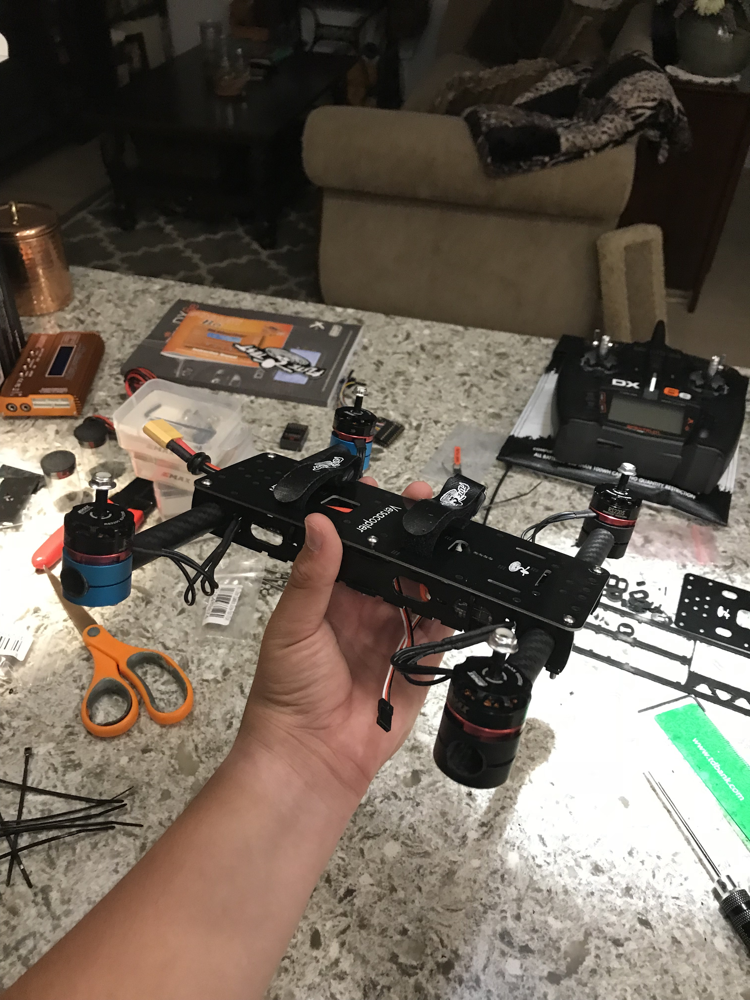
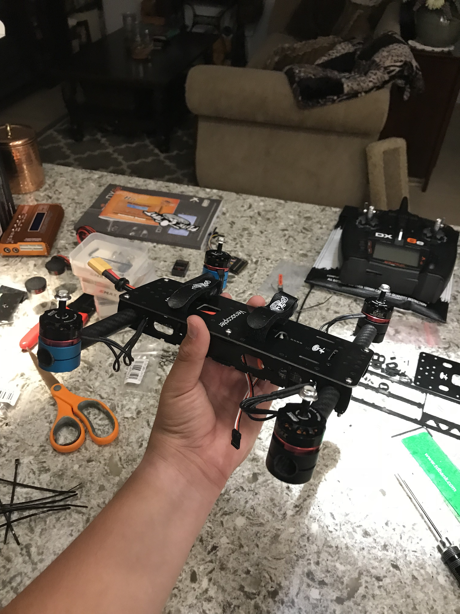
 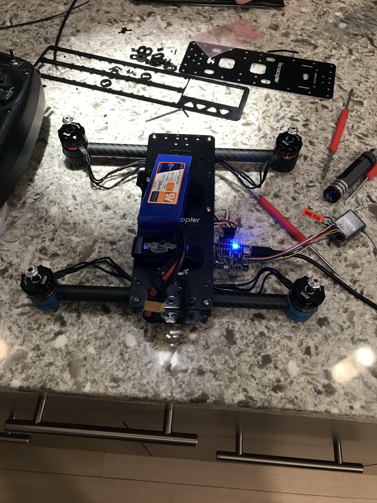
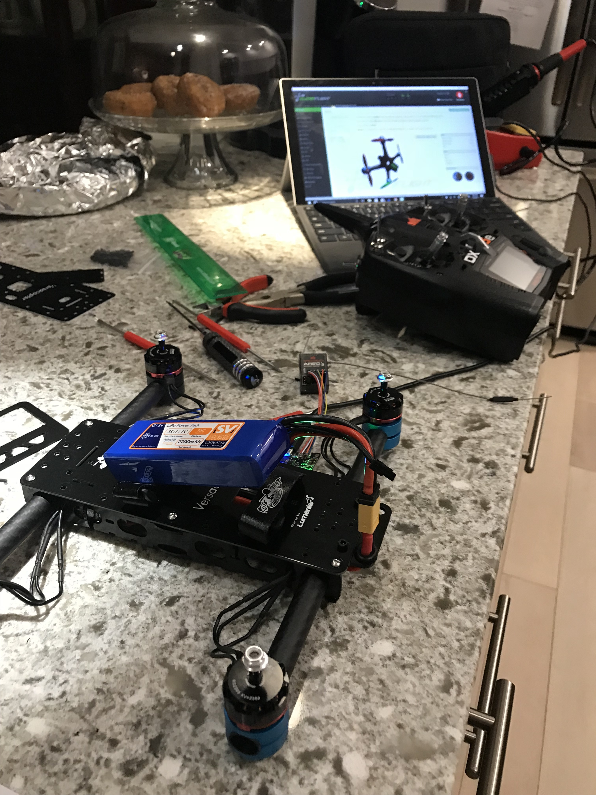
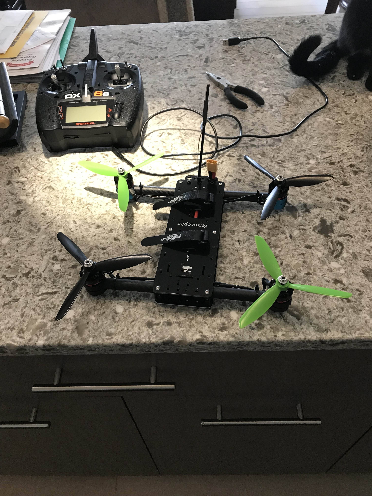
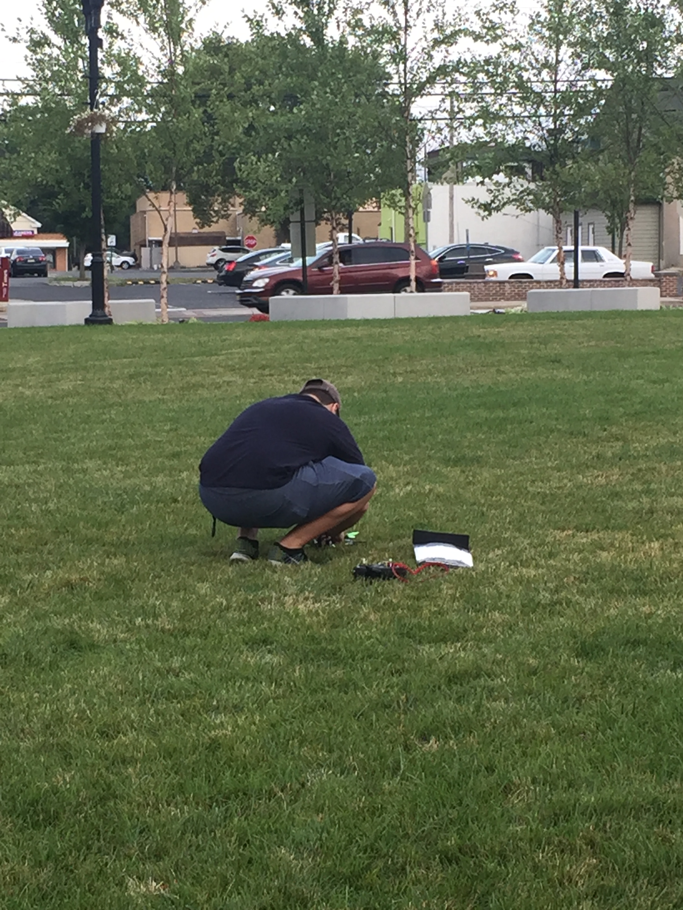
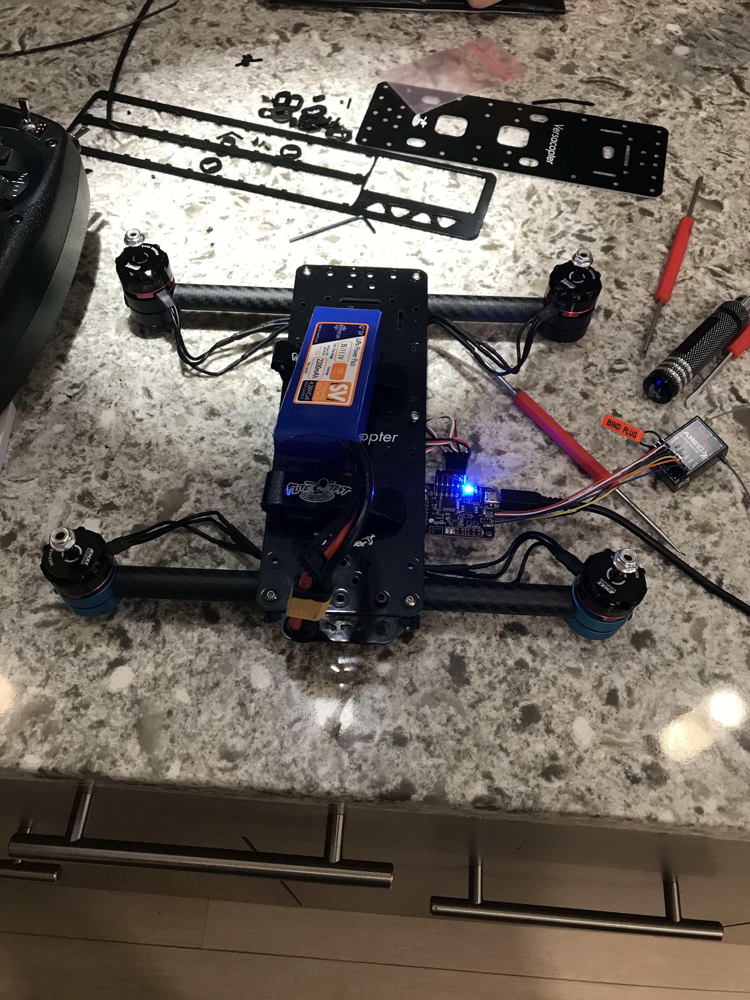
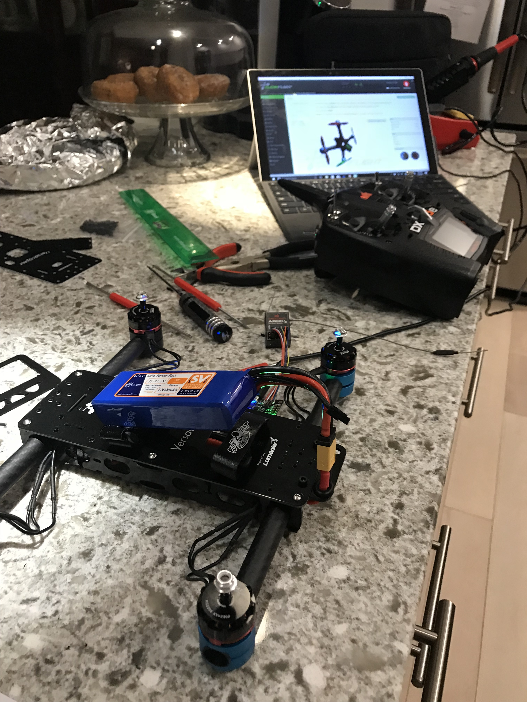
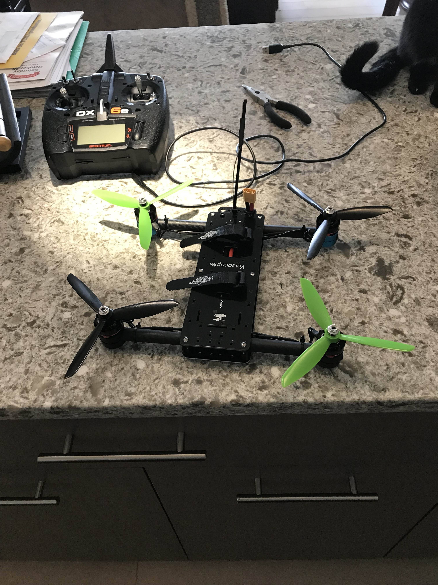
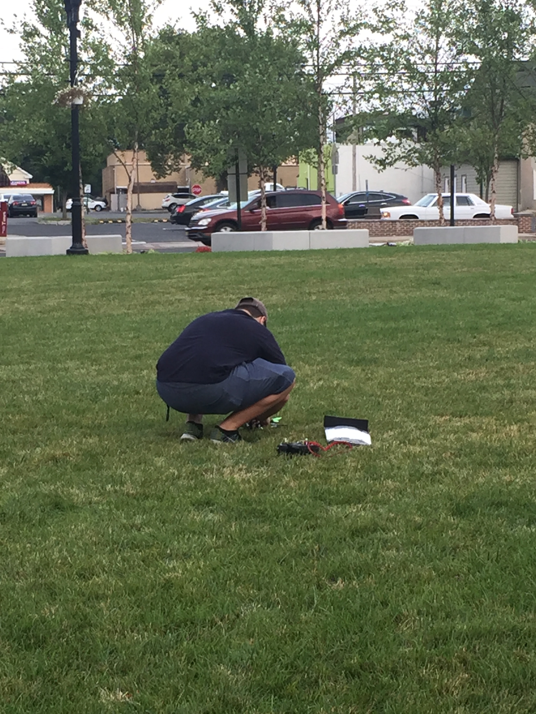

 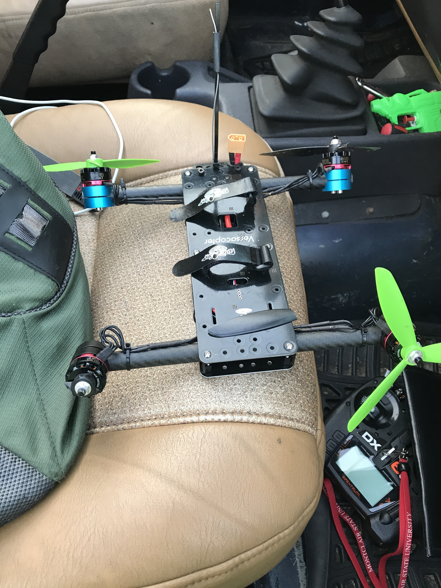
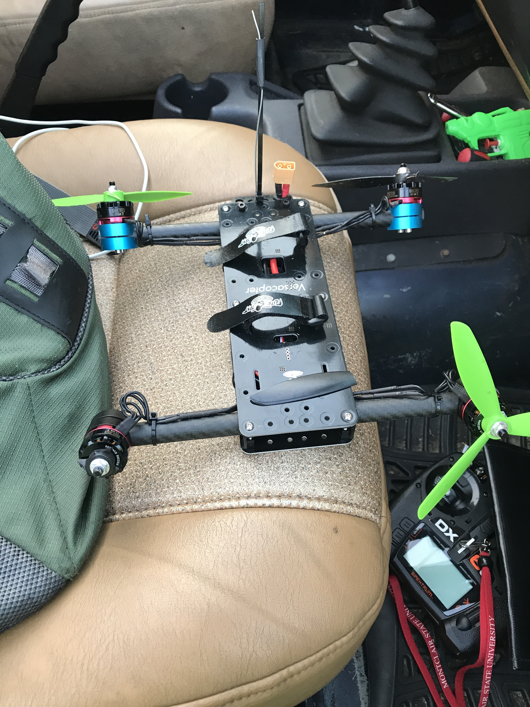
This custom model consists of: Naze32Rev6 Flight Controller, 3S LiPo Battery, Versacopter V2 Frame Kit from FliteTest.com, Spektrum Radio Reciever and Transmitter, and Electronics Pack E from FliteTest.com.
Tools were gathered including: soldering equipment, screwdrivers, alan wrenches, pliers, wire strippers, and electrical tape. Quadcopter parts were organized and prepared for assembly.
The XT60 battery connector was soldered to two of the largest solder pads on the PDB. The four Electronic Speed Controllers (ESC) were soldered to their respective pads.
The Delrin walls of the body were pieced together and mounted to the PDB with bolts. Four boom clamps were also loosely tightened on at this point.
The ten inch booms were snugly fit through the boom clamps. They were then measured to insure symmetry. Finally, the four boom clamps were tightened.
The motor clamps were loosely screwed to the motors, and snugly slid on the booms. The motors were alligned using a level surface to ensure even flight. Finally, screws were tightened.
All of the pins were soldered to the flight controller board. The color coded jumper leads were pressed into place and secured with foam tape to endure crashes.
The radio receiver was plugged into it's respective flight controller leads and the ESCs were plugged into their respective motors. The battery was plugged in and it booted successfully.
The Clean Flight Google application was installed and booted. The Quadcopter was plugged in via USB, flight data was configured, and gyroscopic sensors were calibrated.
Following instructions from the manual, the transmitter remote was bound to the quadcopter. The body was buttoned up with the electronics inside, and the propellors were twisted on.
The local Glassboro town square is a great place to fly. It is rarely busy, there is a lot of open space, and the ground is mostly soft grass to decrease crash damage.
The motors armed at the flick of a switch, and the propellors twirled. With increase of throttle and steadying of yaw, pitch, and roll; the drone took flight.
After some tweaked settings and a few practice flights, human error was reduced and the quadopter could fly for almost 15 minutes without incident.
For the very first of the quadcopter, the radio transmitter had complete control over its movement. This, combined with weak pilot skill resulted in a crash.
After a crash into grass, the Versacopter V2 has no unfixable damages. The only problems that might arise are broken propellors (cheap to replace) and unalligned motors (fixable with a wrench).